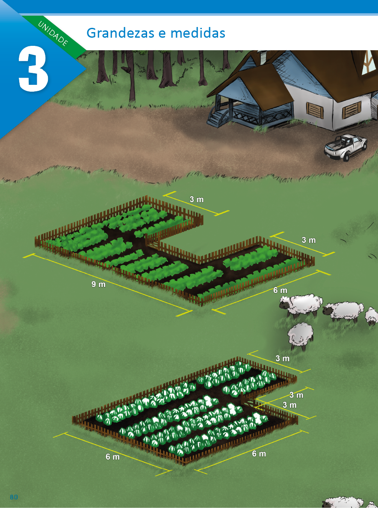
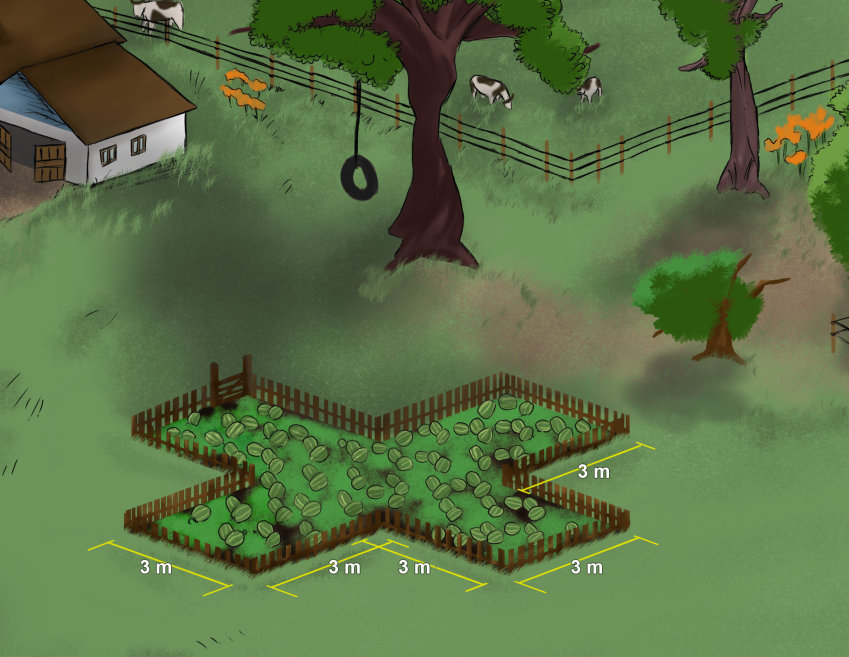
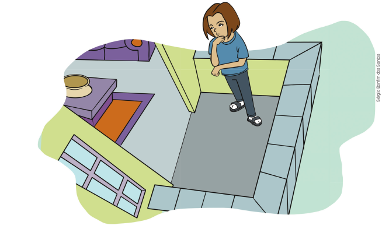
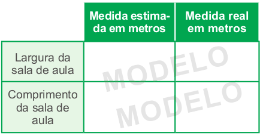

UNIDADE 3 - Grandezas e medidas
80
UNIDADE 3 - CAPÍTULO 1
CONVERSE
O consumo de frutas e verduras é importante para mantermos uma alimentação saudável. No sítio de Leandro, há um espaço destinado ao plantio de uma grande diversidade de frutas e verduras. Na ilustração, temos representadas as áreas destinadas para o plantio de alface, couve-flor e melancia.
1. Ao observar as áreas destinadas ao plantio dessas hortaliças, você acha que elas são iguais? Como faria para calcular a área de cada região?
81
UNIDADE 3 - CAPÍTULO 1
CAPÍTULO 1 - Situações envolvendo medições
No nosso cotidiano, às vezes precisamos realizar uma medição e nem sempre temos instrumentos como o metro e a trena para realizá-la. No entanto, podemos utilizar outras formas para realizar estas medições, mesmo não sendo medidas padronizadas. Podemos fazer uma estimativa usando, por exemplo, partes do nosso corpo como unidade de medida.
Situação 1
Lucas quer comprar um sofá de quatro lugares para colocar em sua sala. Observe a sala de Lucas:


Lucas não tem uma trena ou um metro em casa para realizar as medições necessárias.
Troque ideias com um colega e escrevam, em seus cadernos, como Lucas poderia realizar as medições do cômodo ou do espaço em que ele deseja colocar o sofá. Ele irá precisar destas informações quando for até a loja escolher o sofá.
82
UNIDADE 3 - CAPÍTULO 1
Situação 2
Manoela quer medir o espaço da varanda de sua casa e está pensando como ela poderá realizar esta medição. Você pode ajudá-la?
Troque ideias com um colega e escrevam, em seus cadernos, quais as estratégias que Manoela poderá utilizar para medir a superfície da varanda.
ENCONTRE SOLUÇÕES
1. Quais instrumentos você conhece que são usados para medir comprimentos? Escreva os nomes em seu caderno.
2. Qual instrumento você usaria para medir:
a) a largura de uma folha de papel;
b) o comprimento da sala;
c) o comprimento de um muro;
d) o comprimento de um lápis.
3. Vamos estimar alguns resultados? Em dupla, façam um desenho da sala de aula de vocês. Depois, indiquem as medidas estimadas por vocês para a largura e o comprimento. Copiem o seguinte quadro em seus cadernos e completem-no. Para realizar as medições, vocês irão precisar de uma trena.
4. Elabore uma situação-problema em que seu colega precise estimar uma medida e possa realizar a medição para verificar se o valor estimado está próxi- mo do real. Troquem os cadernos, para que vocês resolvam os problemas pro- postos por ambos e depois verifiquem juntos se a resolução apresentada está correta.
83
UNIDADE 3 - CAPÍTULO 1